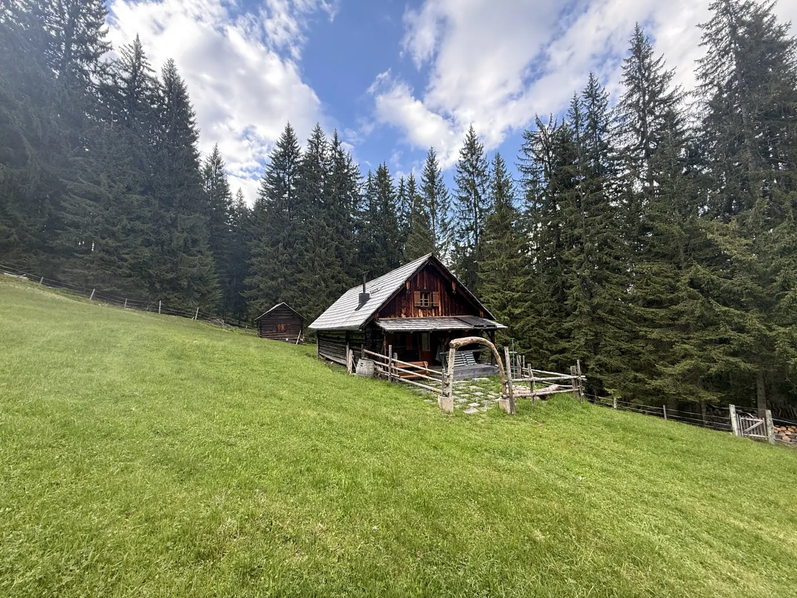

Schmiedsipplhof
Drei Ferienwohnungen am Bauernhof mit Blick auf den Gosaukamm, Tieren zum Streicheln, Zirbensauna und Spielplatz. Für Familien und Gruppen bis 24 Personen.

Gosau am Dachstein · Salzkammergut
Hofleben mit Eseln und Zirbensauna oder eine Almhütte für dich allein auf 1.300 m – Urlaub am Bauernhof oder auf der Alm. Einzigartig, nachhaltig, echt.
Unsere Urlaubswelten
Drei Ferienwohnungen am Bauernhof mit Blick auf den Gosaukamm, Tieren zum Streicheln, Zirbensauna und Spielplatz. Für Familien und Gruppen bis 24 Personen.

Unsere Selbstversorgerhütte in Alleinlage auf 1.300 m. Holzherd, Kachelofen, Sternenhimmel und kein Nachbar weit und breit. Für bis zu 6 Personen.
Lieber modern und mitten im Ort? Unsere Apartments findest du auf apartments-salzkammergut.at.


Geprüfter Urlaub-am-Bauernhof-Betrieb mit 4 Blumen. 2024 und 2025 mit 5 von 5 Punkten ausgezeichnet.
Das sagen unsere Gäste
Echte Gästebewertungen über Urlaub am Bauernhof (TrustYou), Stand Oktober 2026. Alle Bewertungen ansehen
„Wir haben uns rundum wohl gefühlt bei euch in Gosau […] Eine sehr schöne Wohnung mit viel Platz […]“
„Ein wunderbarer Aufenthalt in der Almheu-Wohnung mit unseren drei Kindern und unserem Hund […] Ein fantastischer Ort für einen Familienurlaub, wir kommen sehr gerne wieder.“
„Ruhiger Hof mit herrlichem Blick auf die Berge. Super ausgestattet, falls man selbst kochen möchte. Sehr sauber, sehr freundliche Gastgeberin. Tolle Sauna.“

Hofleben
Seit 2015 führen wir den Schmiedsipplhof als Mutterkuhbetrieb. Die Kälber bleiben bei ihren Müttern, im Sommer sind die Rinder auf der Alm. Am Hof leben Esel, Walliser Schwarznasenschafe, Ponys, Laufenten und Katzen. Alle haben Namen, und alle freuen sich über Besuch.
28.–29.Dezember 2026
Riesentorlauf und Slalom am Hornspitz, nur ein paar Gehminuten vom Hof. Wer dabei sein will, bucht am besten jetzt.
Urlaub im Salzkammergut
Von uns aus erreichst du die schönsten Ziele der Region in wenigen Minuten. Unsere Tipps für Ausflüge und Wanderungen.
Freie Termine sehen, Preis berechnen und sofort fix buchen. Ohne Anfrage, ohne Warten.
Unsere Online-Buchung wird gerade eingerichtet. Bis dahin buchst du telefonisch oder per E-Mail.
Fragen? Tel. +43 664 11 44 926
info@almromantik.at

Fragen vor der Buchung? Ruf uns an oder schreib uns.
Tel. +43 664 11 44 926
info@almromantik.at
Janslweg 22, 4824 Gosau